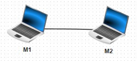

Vous trouverez ici, une présentation des bases de Filius, cela pourrait vous être utile, pensez à y jeter un œil.
Nous allons maintenant relier les deux ordinateurs, pour cela, il vous suffit de cliquer dans cet ordre sur "câble", le premier ordinateur puis le deuxième ordinateur.
Félicitations, vous avez créé votre premier réseau !
Testons maintenant ce réseau.
Pour vérifier la possibilité d'atteindre un autre ordinateur, on utilise la commande ping adresseIP. Cette dernière essaie de joindre l'adresse IP précisée en lui envoyant un petit paquet puis attend une réponse éventuelle et enfin affiche le temps que l'envoie du message et le retour de l'accusé de réception ont pris.
Essayons de joindre le deuxième ordinateur.
La dernière ligne nous indique que tous les paquets ont été reçus, parfait, tout fonctionne !
Nous allons maintenant agrandir notre réseau.

Lors de l'exécution du ping, vous pouvez observer la route prise par les paquets (les câbles s'allument en vert).
Une dernière précision :
Dans les caractéristiques des ordinateurs, vous pouvez apercevoir un "netmask" (masque de réseau en français), vous devez juste savoir que :
Adresse M2 :
Adresse M3 :
Adresse M4 :
Vous savez donc créer de petits réseaux locaux, nous allons maintenant voir comment relier des réseaux locaux entre eux.
Il faut maintenant configurer le routeur afin qu'il serve de passerelle entre nos deux réseaux locaux.
Nous allons nous intéresser aux deux onglets ayant pour nom des adresses IP. Vous remarquerez que lorsque vous changer d'onglet, les câbles de gauche et de droite reliés au routeur changent de couleur.
Nous voulons que notre routeur puisse communiquer avec notre premier réseau, il faut donc lui donner une adresse IP qui le lui permet, choisissons 192.168.0.254.
Nous voulons que notre routeur puisse aussi communiquer avec notre deuxième réseau, il faut donc lui donner une adresse IP qui le lui permet, choisissons 192.168.1.254.
La commande "traceroute" permet de suivre le chemin qu'un paquet de données va suivre pour aller d'une machine à l'autre.
En utilisant le logiciel Filius, créer 3 réseaux de 2 machines chacun. Ces 3 réseaux seront reliés par un routeur. Après avoir effectué toutes les opérations de configuration nécessaires, effectuez un ping entre deux machines de deux réseaux différents.
Exercice 3 :Nous allons maintenant travailler sur un réseau plus complexe :

. . . . . . . . . . . . . . . . . . . . . . . . . . . . . . . . . . . . . . . . . . . . . . . . . . . . . . . . . . . . . . . . . . . . . . . . . . . . . . . . . . . . . . . . . . . . . . . . . . . . . . . . . . . . . . . . . . . . . . . . . . . . . . . . . . . . . . . . . . . . . . . . . . . . . . . . . . . . . . . . .
(ATTENTION : cela peut ne pas fonctionner du premier coup, car la mise à jour des tables de routage n'est pas immédiate : vous pouvez essayer de faire un ping entre M14 et M9, si cela ne fonctionne pas (timeout), attendez quelques secondes et recommencez. Une fois que le ping fonctionne, vous pouvez faire le traceroute).
. . . . . . . . . . . . . . . . . . . . . . . . . . . . . . . . . . . . . . . . . . . . . . . . . . . . . . . . . . . . . . . . . . . . . . . . . . . . . . . . . . . . . . . . . . . . . . . . . . . . . . . . . . . . . . . . . . . . . . . . . . . . . . . . . . . . . . . . . . . . . . . . . . . . . . . . . . . . . . . . .